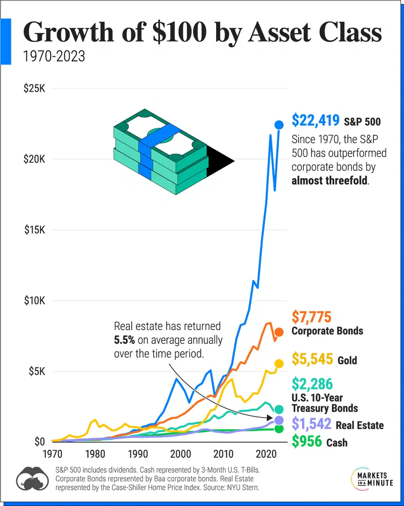

Sources: The Growth of $100 by Asset Class (1970-2023) and Historical Returns on Stocks, Bonds and Bills: 1928-2023
According to the above figure, over the 53 year period from 1970 to 2023, the S&P 500 grew an average of 10.75% per year, whereas cash grew an average of 4.35% per year. The cash growth just beat inflation, which was 3.98% per year during that period. Here “Cash” is measured in the value of 3-month U.S. treasury bills (T-bills). It’s well known that leaving money in actual cash loses value over time, because prices of common items like bread, and soap and tend to increase over time.
Why is this useful to the average person? At an annual growth rate of 10.75%, an initial saving of $1000 plus monthly investments of $400 per month can grow to $1 million dollars in 30 years. You can do the calculation yourself here.
The traditional approach to get good returns, similar to 10.75%, is to invest in mutual funds, which invest your money in a variety of financial products, including stocks and bonds. They often claim to give great returns, even better than the S&P 500 (which is unlikely to hold for 20-30 years (see Hallam 2017 for example)). However they come at a large cost, measured by the management expense ratio (MER). The MER is a percentage that is deducted from the annual returns of the underlying fund. This MER calculator comapres an initial investment of $10000 with monthly contributions of $1000 over 25 years with investments that have the same return but significantly different MERs. The first investment has an MER of 0.24%, comparable to many Vanguard funds, and the second has an MER of 2.23%, the MER of expensive mutual funds. The difference in fees over 25 years is over $225 thousand dollars.
The solution for most people is to inveset in index funds. Index funds are designed to passively track an index like the S&P 500 US stock market index, S&P/TSX Composite Index, bond market indices, etc. Since they are passively managed, they typically have a much lower MER than mutual funds, which are actively managed. Most brokerages sell exchange traded funds (ETFs), which are index funds that can be traded like stocks.
With thousands of ETFs to choose from these days, there are still challenges. The solution is to pick ETFs with low fees (MER < 0.5%), a diversified portfolio, and be consistient over the long run (quoted from canadiancouchpotato.com). Vanguard ETFs are a great choice for having well diversified ETFs with low fees, which I go with. There’s also BlackRock (iShares) and BMO in Canada. Simple examples of balanced (containing stocks and bonds) ETF portfolios are available here. For example, VBAL is an ETF by Vangaurd Canada that has been around since 2018 and has a 5 year growth rate of 6.30%, with an MER of 0.24%, thus an effective 5 year growth rate of 6.06%. This ETF is an “end-user” ETF that tracks an internal benchmark, but claims to “invest in broad-based equity and fixed income markets”, so it’s safe to assume it’s diversified. See the top 10 holdings for the specific ETFs it aggregates. This ETF gives a fairly easy option for a low fee, diversified portfolio.
Finally, a plan to practically implement ETF investing by automatically investing deposits, and reinvesting dividends can be found at (Bortolotti 2024) here. See (Hallam 2017) for a much more detailed walkthrough on ETF investing. (Lespérance 2024) for a more detailed guide on ETF investing online for Canadians. (Sethi 2019) for another introduction to ETF investing and much more about personal finance.